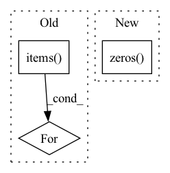

Pattern ID :39720
Before Change
if ctx.is_initializing:
state = distributed_shampoo(ctx)[0](grads)
ctx.parameters["/shampoo/count"] = state.count
for k, v in state.stats.items():
ctx.parameters["/shampoo/" + k] = v
for param_name, grad in grads.items():
inner_ctx = ctx.add_to_prefix(param_name, count=False)After Change
ctx = ctx.add_to_prefix("optimizer")
lr = -get_current_lr(ctx, current_step)
if ctx.is_initializing:
ctx.parameters["/shampoo/count"] = jnp.zeros()
for param_name, grad in grads.items():
inner_ctx = ctx.add_to_prefix(param_name, count=False)
if "optimizer" in param_name or "shampoo" in param_name:In pattern: SUPERPATTERN
Frequency: 4
Non-data size: 3
Instances Fragment ID: 113165496
Project Name: homebrewnlp/homebrewnlp-jax
Commit Name: 9e84e647ebc290caafa204200f2aad142f3631ad
Time: 2022-05-11
Author: 39779310+ClashLuke@users.noreply.github.com
File Name: src/optimizer.py
M Class Name: AnonimousClass
N Class Name: AnonimousClass
M Method Name: update(3)
N Method Name: update(3)
M Parent Class:
N Parent Class:
M File Name: src/optimizer.py
N File Name: src/optimizer.py
M Start Line: 88
M End Line: 96
N Start Line: 80
N End Line: 80
Before Change
)
setattr(self, self._fused_name, state)
for name, _ in self._fused_map.items():
setattr(
self,
name,
torch.zeros((self._n_tasks, 1), dtype=torch.double, device=self.device),After Change
torch.zeros((self._n_tasks, 1), dtype=torch.double, device=self.device)
)
getattr(self, WEIGHTS).append(
torch.zeros( (self._n_tasks, 1), dtype=torch.double, device=self.device)
)
def update(
self, Fragment ID: 113165497
Project Name: facebookresearch/torchrec
Commit Name: 1ced9aa6bb79f598e8e5640d583ad8c295afcbd3
Time: 2022-12-09
Author: renganxu@meta.com
File Name: torchrec/metrics/auc.py
M Class Name: AUCMetricComputation
N Class Name: AUCMetricComputation
M Method Name: _init_states(1)
N Method Name: _init_states(1)
M Parent Class: RecMetricComputation
N Parent Class: RecMetricComputation
M File Name: torchrec/metrics/auc.py
N File Name: torchrec/metrics/auc.py
M Start Line: 77
M End Line: 92
N Start Line: 91
N End Line: 102
Before Change
)
setattr(self, self._fused_name, state)
for name, _ in self._fused_map.items():
setattr(
self,
name,
torch.zeros((self._n_tasks, 1), dtype=torch.double, device=self.device),After Change
torch.zeros((self._n_tasks, 1), dtype=torch.double, device=self.device)
)
getattr(self, WEIGHTS).append(
torch.zeros( (self._n_tasks, 1), dtype=torch.double, device=self.device)
)
def update(
self, Fragment ID: 113165495
Project Name: facebookresearch/torchrec
Commit Name: b6090b08096e6ec2dfeb75ca209aad89a009886c
Time: 2023-01-24
Author: yinbin@meta.com
File Name: torchrec/metrics/auc.py
M Class Name: AUCMetricComputation
N Class Name: AUCMetricComputation
M Method Name: _init_states(1)
N Method Name: _init_states(1)
M Parent Class: RecMetricComputation
N Parent Class: RecMetricComputation
M File Name: torchrec/metrics/auc.py
N File Name: torchrec/metrics/auc.py
M Start Line: 77
M End Line: 92
N Start Line: 91
N End Line: 102